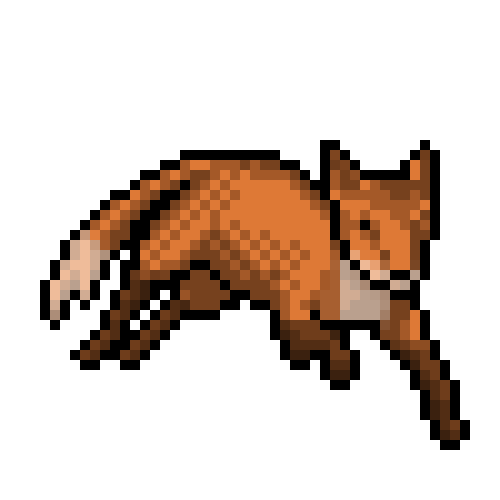

Sobre o Tema
O tema do Agrinho 2025, "Inovação e Tecnologia na Agricultura", destaca como o uso de novas ferramentas, máquinas e ideias está transformando o trabalho no campo, tornando-o mais eficiente, sustentável e conectado ao futuro.
Por que isso é importante?
A tecnologia ajuda os produtores a economizar recursos, aumentar a produção e cuidar melhor do meio ambiente. Drones, sensores, aplicativos e máquinas modernas são aliados do campo moderno.

Iniciativas e Exemplos
- Uso de drones para monitoramento de plantações
- Sensores de solo para medir umidade e nutrientes
- Agricultura de precisão com GPS e dados em tempo real
- Aplicativos para previsão do tempo e controle de pragas
- Feiras tecnológicas no meio rural

Galeria


Contato
Quer saber mais sobre o tema ou participar?
- Email: batista.silva.douglas@escola.pr.gov.br
- Projeto Agrinho - Morelli